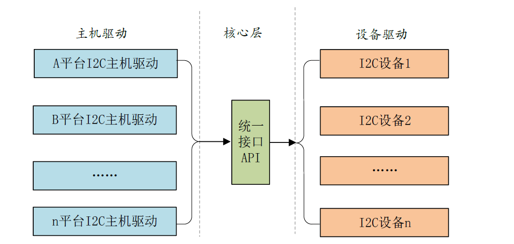
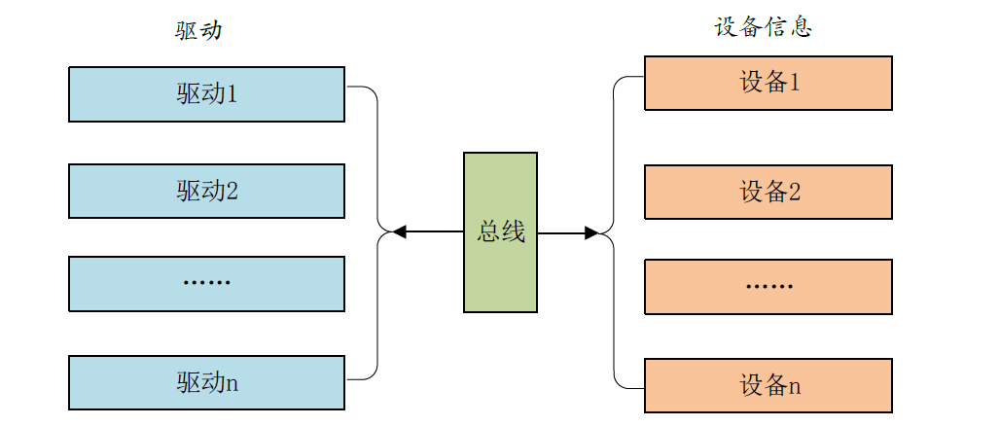

驱动开发-platform
linux驱动的分离与分层
因为驱动程序占用了Linux内核代码量的大头，如果不对驱动程序加以管理，任由重复的代码肆意增加，那么用不了多久Linux 内核的文件数量就庞大到无法接受的地步。
总线-驱动-设备
将设备信息从设备驱动中剥离开来，驱动使用标准方法去获取到设备信息(比如从设备树中获取到设备信息)，然后根据获取到的设备信息来初始化设备。 这样就相当于驱动只负责驱动，设备只负责设备，想办法将两者进行匹配即可。这个就是Linux 中的总线(bus)、驱动(driver)和设备(device)模型，也就是常说的驱动分离。
总线(bus)、驱动(driver)和设备(device)。总线是linux直接提供，driver和device是我们需要编写的
platform
Linux设备模型的核心思想。Platform机制将硬件信息（platform_device）和驱动代码（platform_driver）分离开来。
platform_device：代表一个具体的硬件设备，包含了设备的物理资源（如内存地址、中断号等）。这部分信息通常来自设备树（Device Tree）或ACPI表，也可以直接在代码中静态定义。platform_driver：包含操作这个设备的驱动代码（初始化、读写、中断处理等）。
这种分离使得同一份驱动代码可以用于不同的硬件平台，只需修改设备树即可，大大提高了代码的可复用性。
bus
总线的注册：
1 | int bus_register(struct bus_type *bus) |
bus_register() 是一个通用函数，它的核心作用是向 Linux 内核的设备模型核心注册一个新的总线类型。无论是 platform_bus_type，还是 pci_bus_type、i2c_bus_type，都需要调用这个函数来完成注册。
注册总线意味着内核现在知道并开始管理这种新类型的总线，包括：
- 在
/sys/bus/下创建对应的总线目录（例如/sys/bus/platform/）。 - 在该总线目录下创建
devices和drivers两个子目录。 - 初始化总线相关的各种数据结构和管理列表（设备链表、驱动链表）。
- 使得挂载在这条总线上的设备和驱动能够执行标准的匹配（Match）、探测（Probe）、移除（Remove）等操作。
struct bus_type
Linux系统内核使用bus_type结构体表示总线，
1 | struct bus_type { |
- match函数，此函数就是完成设备和驱动之间匹配的，总线就是使用match函数来根据注册的设备来查找对应的驱动，或者根据注册的驱动来查找相应的设备，因此每一条总线都必须实现此函数。match函数有两个参数：dev 和drv，这两个参数分别为device 和device_driver类型，也就是设备和驱动。
platform_bus_type
platform总线是bus_type的一个具体实例，platform_bus_type就是platform平台总线，其中platform_match就是匹配函数。
1 | struct bus_type platform_bus_type = { |
platform_match函数的定义如下：
1 | static int platform_match(struct device *dev, struct device_driver *drv) |
我们可以看到一共有四种匹配方式：
第一种：OF类型的匹配，也就是设备树采用的匹配方式
原理：设备树中的每个设备节点的compatible属性会与of_match_table表中的所有成员比较，如果有相同的条目就表示设备与此驱动匹配，设备与驱动匹配之后probe函数就会执行
**参数：**device_driver结构体(表示设备驱动)中有个名为of_match_table的成员变量，此成员变量保存着驱动的compatible匹配表
1
2
3
4
5
6struct of_device_id {
char name[32];
char type[32];
char compatible[128];
const void *data;
};**第二种：**ACPI匹配方式
用途：电源管理
**第三种：**id_table匹配方式
原理：在定义结构体
platform_driver时，我们需要提供一个id_table的数组，该数组说明了当前的驱动能够支持的设备。当加载该驱动时，总线的match函数发现id_table非空，则会比较id_table 中的name 成员和平台设备的name 成员，若相同，则会返回匹配的条目。**流程：**每当有新的驱动或者设备添加到总线时，总线便会调用match函数对新的设备或者驱动进行配对。
参数：
platform_match_id函数中第一个参数为驱动提供的id_table- 第二个参数则是待匹配的平台设备。当待匹配的平台设备的name字段的值等于驱动提供的id_table 中的值时，会将当前匹配的项赋值给platform_device 中的id_entry，返回一个非空指针。若没有成功匹配，则返回空指针。
1
2
3
4
5
6
7
8
9
10
11
12
13static const struct platform_device_id *platform_match_id(
const struct platform_device_id *id,
struct platform_device *pdev)
{
while (id->name[0]) {
if (strcmp(pdev->name, id->name) == 0) {
pdev->id_entry = id;
return id;
}
id++;
}
return NULL;
}**第四种：**原理：若第三种匹配方式的id_table 不存在的话就直接比较驱动和设备的name 字段，看看是不是相等，如果相等的话就匹配成功。
strcmp(pdev->name, drv->name)==注：==设备树机制>ACPI 匹配模式>id_table 方式> 字符串比较
platform_device
内核使用struct platform_device结构体来描述平台设备，结构体原型如下：如果内核支持设备树的话就不要再使用platform_device 来描述设备了，因为改用设备树去描述了
设备信息的注册：
1 | int platform_device_register(struct platform_device *pdev) |
1 | struct platform_device { |
**name：**设备名称，总线进行匹配时，会比较设备和驱动的名称是否一致；
**id：**指定设备的编号，Linux 支持同名的设备，而同名设备之间则是通过该编号进行区分；
dev：Linux 设备模型中的device结构体，linux 内核大量使用了面向对象思想，platform_device通过继承该结构体可复用它的相关代码，方便内核管理平台设备；
**num_resources：**记录资源的个数，当结构体成员resource 存放的是数组时，需要记录resource数组的个数，内核提供了宏定义ARRAY_SIZE 用于计算数组的个数；
**resource：**平台设备提供给驱动的资源，如irq，dma，内存等等。该结构体会在接下来的内容进行讲解；
**id_entry：**平台总线提供的另一种匹配方式，原理依然是通过比较字符串，这部分内容会在平台总线小节中讲，这里的id_entry 用于保存匹配的结果；
平台设备的注册与注销接口如下：
1 | int platform_device_register(struct platform_device *); //注册一个平台设备 |
何为设备信息
平台设备的工作是为驱动程序提供设备信息, 设备信息包括硬件信息和软件信息两部分。
**硬件信息：**驱动程序需要使用到什么寄存器，占用哪些中断号、内存资源、IO 口等等
**软件信息：**以太网卡设备中的MAC 地址、I2C 设备中的设备地址、SPI 设备的片选信号线等等
struct resource
对于硬件信息，使用结构体struct resource 来保存设备所提供的资源，比如设备使用的中断编号，寄存器物理地址等，结构体原型如下：
1 | struct resource { |
**name：**指定资源的名字，可以设置为NULL；
**start、end：**指定资源的起始地址以及结束地址
**flags：**用于指定该资源的类型，在Linux 中，资源包括I/O、Memory、Register、IRQ、DMA、Bus 等多种类型，最常见的有以下几种：
| 资源宏定义 | 描述 |
|---|---|
| IORESOURCE_IO | 用于IO地址空间，对应于IO端口映射方式 |
| IORESOURCE_MEM | 用于外设的可直接寻址的地址空间 |
| IORESOURCE_IRQ | 用于指定该设备使用某个中断 |
| IORESOURCE_DMA | 用于指定使用的DMA 通道 |
资源获取函数
1 | //根据资源类型和序号来获取指定的资源。 |
| 函数原型 | 参数说明 | 返回值 | 作用与特点 |
|---|---|---|---|
struct resource *platform_get_resource(struct platform_device *pdev, unsigned int type, unsigned int num) |
pdev: 对应的platform设备 type: 资源类型（如 IORESOURCE_MEM, IORESOURCE_IRQ) num: 该类资源的索引号（从0开始） |
成功：指向 struct resource 的指针 失败：NULL |
根据类型和索引获取资源。最基础的函数，但如果设备树资源顺序改变，代码可能需要修改。 |
int platform_get_irq(struct platform_device *pdev, unsigned int num) |
pdev: 对应的platform设备 num: 中断资源的索引号（从0开始） |
成功：中断号（≥0） 失败：负的错误码（如 -ENXIO） |
获取中断号的快捷方式。是platform_get_resource(..., IORESOURCE_IRQ, ...)的封装。必须检查返回值。 |
struct resource *platform_get_resource_byname(struct platform_device *pdev, unsigned int type, const char *name) |
pdev: 对应的platform设备 type: 资源类型 name: 资源名称字符串 |
成功：指向 struct resource 的指针 失败：NULL |
根据类型和名称获取资源。需要设备树中使用 reg-names 或 interrupt-names 属性。推荐使用，代码更稳定，不依赖顺序。 |
int platform_get_irq_byname(struct platform_device *pdev, const char *name) |
pdev: 对应的platform设备 name: 中断名称字符串 |
成功：中断号（≥0） 失败：负的错误码 | 根据名称获取中断号的快捷方式。是platform_get_resource_byname(..., IORESOURCE_IRQ, ...)的封装。推荐使用。 |
void __iomem *devm_platform_ioremap_resource(struct platform_device *pdev, unsigned int index) |
pdev: 对应的platform设备 index: 内存资源的索引号 |
成功：映射后的内核虚拟地址（void __iomem *） 失败：ERR_PTR(...) 错误指针 |
获取内存资源并ioremap的托管(managed)函数。二合一操作，自动管理资源释放。现代驱动常用，但按索引号。 |
void __iomem *devm_platform_ioremap_resource_byname(struct platform_device *pdev, const char *name) |
pdev: 对应的platform设备 name: 内存资源名称 |
成功：映射后的内核虚拟地址（void __iomem *） 失败：ERR_PTR(...) 错误指针 |
根据名称获取内存资源并ioremap的托管函数。二合一操作，自动管理资源释放。现代驱动最佳实践，首选。 |
void __iomem *devm_platform_get_and_ioremap_resource(struct platform_device *pdev, unsigned int index, struct resource **res) |
pdev: 对应的platform设备 index: 索引号 res: 出参，返回获取到的resource指针 |
成功：映射后的内核虚拟地址 失败：ERR_PTR(...) 错误指针 |
同时获取resource结构体和映射地址的托管函数。如果你既需要地址又需要resource详细信息（如资源长度），可以用此函数。 |
platform_driver
struct platform_driver结构体表示platform驱动
我们定义好platform_driver结构体变量以后，需要在驱动入口函数里面调用platform_driver_register函数向Linux内核注册一个platform驱动
1 | int platform_driver_register (struct platform_driver *driver) |
1 | struct platform_driver { |
- probe函数，当驱动与设备匹配成功以后probe函数就会执行，非常重要的函数！！一般驱动的提供者会编写，如果自己要编写一个全新的驱动，那么probe 就需要自行实现。
- driver成员，为device_driver结构体变量，Linux 内核里面大量使用到了面向对象的思维，device_driver 相当于基类，提供了最基础的驱动框架
- **platform_device_id成员：**platform 总线匹配驱动和设备的时候采用的第三种方法
probe函数
我们自己需要编写的全新的一个设备驱动，就是通过这个函数进行实现的
struct device_driver
这个结构体中有一个很重要的变量：of_match_table 就是采用设备树的时候驱动使用的匹配表，同样是数组，每个匹配项都为of_device_id 结构体类型
1 | struct device_driver { |
struct of_device_id
结构体中的compatible非常重要，因为对于设备树而言，就是通过设备节点的compatible属性值和of_match_table中每个项目的compatible成员变量进行比较，如果有相等的就表示设备和此驱动匹配成功。
1 | struct of_device_id { |
驱动框架
设备树：
1 | gpioled { |
驱动框架：
1 | /* 驱动探测函数：当驱动与设备成功匹配后，内核会自动调用此函数 */ |
代码流程：
- 模块加载 (
insmod/modprobe) → 调用leddriver_init()→ 注册led_driver到平台总线 - 驱动注册后 → 内核遍历所有平台设备，尝试与驱动的
of_match_table匹配 - 找到匹配设备 → 内核调用驱动的
probe函数 (led_probe) - 模块卸载 (
rmmod) → 调用leddriver_exit()→ 注销驱动 → 内核调用remove函数 (led_remove)